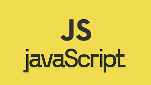

Цей курс допоможе ознайомитися з основами HTML. Ви навчитеся створювати структуру вебсторінок, працювати з текстом, зображеннями, посиланнями та таблицями. Курс підходить для початківців і не потребує попередніх знань у програмуванні.

Цей курс допоможе ознайомитися з основами CSS - мови стилів, яка відповідає за зовнішній вигляд вебсторінок. Ви навчитеся оформлювати текст, змінювати кольори, шрифти та фони, працювати з відступами, розмірами елементів, рамками та розташуванням блоків на сторінці. Також курс познайомить вас із базовими принципами адаптивного дизайну, щоб сайти коректно виглядали на різних пристроях. Курс підходить для початківців і не потребує попередніх знань у програмуванні.
Цей курс допоможе ознайомитися з основами JavaScript - мови програмування, яка робить вебсторінки інтерактивними. Ви навчитеся працювати зі змінними, умовами та циклами, створювати прості програми, обробляти події користувача (натискання кнопок, введення тексту), змінювати вміст сторінки та керувати елементами HTML. Також курс познайомить вас з основами логіки програмування та простими скриптами для вебсайтів. Курс підходить для початківців і не потребує попередніх знань у програмуванні.